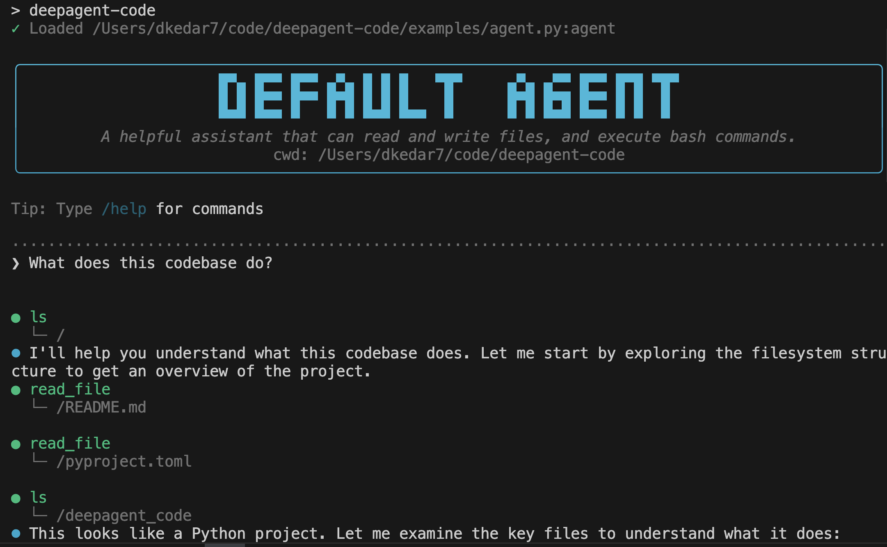
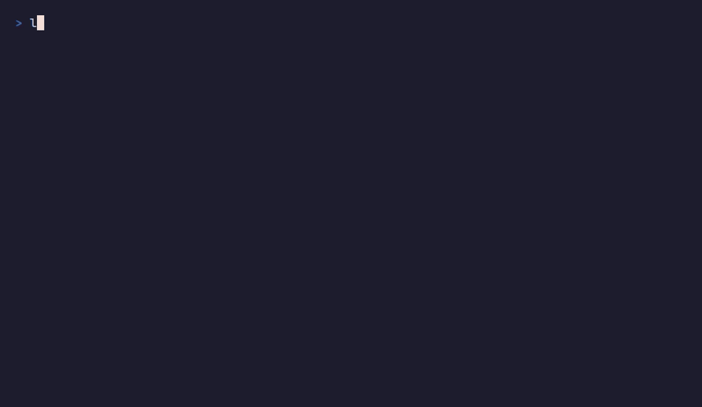
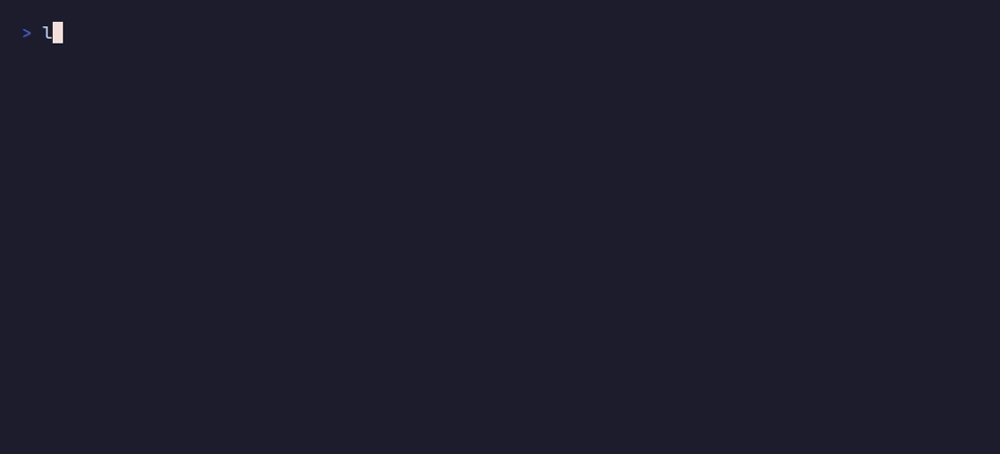

Terminal — langstage-cli¶
The terminal stage: a Claude Code-style CLI that runs any LangGraph
CompiledGraph from the command line, with streaming, tool-call rendering,
human-in-the-loop approval, and sessions you can pick up later. It runs your
agent; it isn't a bundled coding agent.
Quickstart¶
pip install langstage-cli
langstage-cli --demo "hello" # keyless echo agent
langstage-cli -a langstage_core.demo.tools:graph "use a tool" # keyless tools / reasoning / HITL demo
langstage-cli init # scaffold my_agent.py + langstage.toml
langstage-cli "hi" # runs the scaffolded agent, no -a needed
langstage-cli -a my_agent.py:graph # your agent, interactive
langstage-cli -a my_agent.py:graph "What can you do?" # one message, then exit
langstage-cli -f ./prompt.md # read the message from a file
init writes a minimal agent that needs only langgraph (already installed) and a
langstage.toml pointing at it. It won't overwrite either file unless you pass
--force.

Demo¶
langstage-cli -a langstage_core.demo.tools:graph: a tool call, reasoning, and the approval menu. No API key.
langstage-agui --demo=tools: --verify, -m, --json, and exit code 2 on a human-in-the-loop pause.
Options¶
| Flag | Purpose |
|---|---|
-a, --agent SPEC |
Agent spec (path/to/file.py:graph or module:graph). |
-g, --graph-name NAME |
Graph variable name when the spec has no :name (default graph). |
--demo |
Run the built-in keyless echo agent. |
-f, --file PATH |
Read the message from a file. |
-q, --quiet |
Print only the reply (automatic when stdout is piped). |
--interactive/--no-interactive |
Ask before approving an interrupt (default), or auto-approve. |
-v, --verbose |
Show node names, and the full traceback when a load or a turn fails. |
-c, --continue |
Resume the most recent session for this workspace. |
--resume [ID] |
Resume a specific session; bare --resume lists them. |
--list-sessions |
List resumable sessions and exit. |
--persist/--no-persist |
Save this session so it can be resumed (default on). |
--verify |
Run one real turn and exit 0 if it completed, non-zero otherwise. |
--show-config |
Print the resolved configuration and exit. |
--version |
Print the version. |
init [--force] |
Scaffold my_agent.py and langstage.toml. |
A spec's inline :name (app.py:prod) wins over -g / [agent] graph_name.
--show-config reports the graph that actually runs.
Interactive commands¶
In the interactive loop:
| Command | What it does |
|---|---|
/help (/h, /?) |
Help, or /help <command> |
/status (/s) |
Agent, thread, verbose mode, working directory |
/version (/v) |
Version and the current agent |
/config (/cfg) |
Show the resolved config, or set a runtime key: /config [key] [value] |
/verbose [on/off] |
Toggle or set verbose output |
/history [N] (/hist) |
Recent conversation messages |
/clear (/c) |
Clear the history and start a fresh thread |
/reset (/restart) |
Reset the session (history and thread) |
/quit (/q, /exit) |
Exit |
Tab completes commands, and Ctrl+C exits.
Sessions¶
Every run saves its conversation, so a later run can continue it, the way Claude Code or Aider do. You don't need a checkpointer in your graph.
langstage-cli --demo "remember: my name is Kedar" # a new session, saved
langstage-cli --demo -c "what's my name?" # continue the most recent session
langstage-cli --list-sessions # sessions for this workspace
langstage-cli --resume 3f2a # a specific one (an unambiguous prefix works)
- Sessions are stored per workspace in
~/.langstage/sessions/<workspace-hash>.sqlite(underLANGSTAGE_CONFIG_HOMEif set;LANGSTAGE_CLI_SESSIONS_DIRmoves them). - Turn persistence off with
--no-persist,LANGSTAGE_PERSIST=0, or[session] persist = falseinlangstage.toml. --no-persist -cresumes read-only: the run sees the earlier conversation but saves nothing.- A graph that compiles in its own checkpointer keeps it, and the CLI's store
isn't used.
/config,/statusand--list-sessionssay so. An in-memoryMemorySavergets a note on stderr, since nothing it holds survives the run. /clearand/resetstart a new thread, which becomes its own session.
Scripting¶
A single-shot run (a MESSAGE argument, -f, or piped stdin) prints only the
agent's reply when stdout is piped: no header, spinner, tool chatter, timing or
color. Errors and diagnostics go to stderr, as does anything your agent prints
while it is imported. The exit code tells you whether the turn worked
(see Exit codes).
answer=$(langstage-cli --demo "say hi") || echo "run failed" >&2
echo "$answer" # (demo agent) You said: say hi
cat prompt.txt | langstage-cli --demo # all of stdin is ONE message
- Piped stdin is sent as a single message, like
-f. Lines starting with/are part of the message, not commands. - An empty
MESSAGEor empty stdin is an error, not a silent no-op. - A terminal still gets the interactive REPL (on Windows, that includes mintty / Git Bash).
-qforces the same clean output in a terminal.- An interrupt needs a person: with stdin not a terminal, the CLI stops rather
than approve blind, and exits
2("paused").--no-interactiveauto-approves on purpose.
Gate CI on an agent with --verify:
Rendering¶
- Markdown. Replies render bold, italics, inline code, links, and fenced code
blocks. Styling is applied per line as the reply streams, so a
**bold**span split across tokens still renders, and code spans and* bulletsare left alone. - Messages and tools. Each assistant message starts its own block, a message's text prints before its own tool calls, and tool results never run into an open line of text.
- Approvals list every argument of the action as
name=value, with control characters escaped so a tool argument can't fake prompt text. See Human-in-the-loop. - Graphs without
messages. A graph whose state has nomessageschannel (say{"query", "answer"}) still runs: the CLI prints its final state as JSON, with a note on stderr. A turn with nothing to show is an error.
Configuration¶
langstage-cli reads the global ~/.langstage/config.toml and the nearest project
langstage.toml, then LANGSTAGE_* env vars, then flags. See
Configuration.
[agent]
spec = "my_agent.py:graph" # relative to this file
[workspace]
root = "."
[ui]
verbose = true
[session]
persist = true
[configurable] # seeds RunnableConfig["configurable"]
thread_id = "my-thread" # a pinned thread persists across runs
Programmatic use¶
The CLI streams through the core's chunk wire. To do the same in your own code:
import asyncio
from langstage_core import load_agent_spec
from langstage_core.agui import build_agent, iter_chunk_frames
agent = build_agent(load_agent_spec("langstage_core.demo.stub:graph")) # or "my_agent.py:graph"
async def main():
async for chunk in iter_chunk_frames(agent, "Hello!", thread_id="s1"):
if chunk.get("chunk"):
print(chunk["chunk"], end="")
print()
asyncio.run(main())
A streaming chunk carries exactly one payload key (chunk, reasoning,
tool_calls, tool_result or extraction). See the
frame reference.